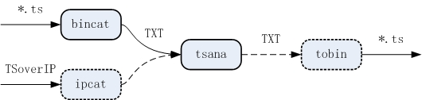
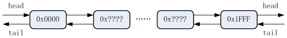
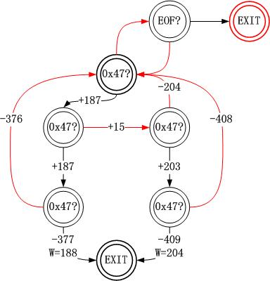
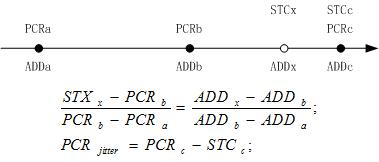

搞数字电视编解码就要跟码流打交道，分析码流的过程中我一直希望把一些繁琐的操作自动化。 虽然公司有码流分析仪，但几个人共用一个仪器总是不方便，并且有些功能码流分析仪也不支持。
2009年初，我开发的H.264编码器出现PCR异常，非常需要连续记录PCR值以便分析其变化规律。 码流分析仪只关注像PCR间隔和PCR抖动这样的指标，不能连续输出PCR值。 于是TStools的最初版本诞生了——SVN的日志记录了它版本化的日子：4月1日。 当时有tsana、ts2es和tsflt三个工具，因此叫TStools（TS工具集）——是不是有点BusyBox的味道？
第2季度，我负责在公司的EMR平台上开发IP发送功能。 代码缺陷和网络问题都会导致丢包，这种小概率事件可能一夜只发生一次，甚至仅在早上上班的时候出现。 因此准确地捕捉丢包事件，对调试工作会有很大帮助。 但是码流分析仪的软件夜里可能会死机，导致拷机实验失败。 因此我在tsana工具中增加了UDP接收模块，跟踪指定PID的CC值，一旦不连续就把系统时间和CC情况打印出来。 如果想同时分析所有PID的丢包情况就要复杂一些了：
即使是完整的实现丢包检测都必须做PSI分析，因此我在这个简单的基础上停下来，开始考虑TStools的架构。
码流分析产生的数据结果很复杂，如何展现给用户是个重要的问题。 针对各种数据特点，图形界面的码流分析软件会使用列表、树、波形图等各种控件展现。 鄙人没有太多艺术细胞，若搞出一个丑丑的图形界面，不仅别人看不上眼，自己用着也难受。 另外搞图形界面需要花大量精力在界面技术上，我更想把精力都用在码流分析算法上。 因此作为一个懒人，我选择文本界面，只是简单地把分析结果打印出来。
这里必须提一下csv文件格式，说它是一种文件格式实在是搞复杂了， 它就是一种文本方式的数据文件，唯一的要求是数据之间用英文逗号隔开。 但是因为这样的规定，像Excel这样的数据处理软件可以直接打开它，开展进一步的数据分析，甚至以图形方式展现数据。 因此csv文件格式是数据能被进一步分析的重要形式，本项目的大部分数据输出都采用逗号分隔，以便保存为csv文件。
虽然我不做图形界面，但是也不想拒绝别人为本项目开发其它形式的界面。 因此本项目的分析代码与文本界面位于不同的模块——如果分析模块封装的很好，别人是可以直接拿来开发界面的。
由于分析模块和文本界面仅处理数据，不涉及任何平台相关的内容，因此项目的可移植性非常好。 我不想把这样的项目局限在Windows平台下，因此在Windows下坚持基于cygwin环境开发， 目前的TStools源代码可以直接在Linux环境下编译运行。
为了同时支持离线分析（TS文件）和在线分析（TS over IP），tsana曾经根据参数格式（文件名/URL地址）选择不同的输入模块。 当时我还把UDP模块的接口封装成文件系统接口的样子，以便tsana能用同样的函数打开两种源。 后来我发现可能的输入方式不止这两种，RTP方式、HTTP方式也可以传输TS流，甚至只要开发一个小盒子就可以支持ASI输入。 难道每增加一种输入方式就要改一次tsana？在shell中，这个问题有更好的解决办法。
Unix下有一个叫做“过滤器”的概念： 每个工具处理stdin（标准输入）传入的内容，产生的结果写给stdout（标准输出），出现的错误写入stderr（标准错误）。 由于“管道”可以实现输入输出重新定向，多个这样的过滤器可以用管道连接起来，完成复杂的任务。 如果把tsana设计成一个过滤器，仅处理从stdin输入的码流，借助管道就可以支持任意形式的输入。

采用这个方案需要解决一个衍生问题：二进制形式的TS数据以什么样的格式在管道间传输？ 二进制文件由于可读性差，数据定位复杂，传输时需要同步，在Unix世界中被严重鄙视。 大部分过滤器都采用文本格式，一行行地（每行同步一次）传递数据。 因此我设计了catbin工具，把二进制形式的TS文件读出来，以文本方式一包一行地发给stdout； 又设计了catip工具，把TS over IP中的UDP包拆开成数个TS包，以文本方式一包一行地发给stdout； 而tsana只是简单的从stdin中一包一行的接收TS包就可以了，它不需要知道是谁在给它码流。 以后如果要增加新的输入形式就写一个xxcat就行了，tsana不需要改代码重新编译。 （解释一下cat，这是unix下一个非常普通的工具，它把文本文件读出来输出到stdout。 因为cat不支持二进制文件，所以我仿照它写了一个tscat，后来扩展了其功能不再限定TS文件，于是形成了catbin。）
规定用文本形式一行传送一个TS包还不够明确，具体这一行是什么格式呢？ 考虑到阅读方便，TS包中的188（或204）个字节之间要有分隔符， 前面提到的英文逗号自然可以，但是过于密集的逗号还是影响阅读，因此用单个空格做分隔符更好。 于是每个TS包变成了这样的文本行：“?? ?? ?? ... ?? \n”，每个字节变成了3个可显字符。 （如果用户需要，catbin允许指定任何字符用作间隔符，而tsana也允许间隔处出现任何[0-9A-Fa-f]范围之外的字符。） 如果catbin中使用“printf("%02X ", x)”把数据转换成文本形式，效率就太低了。 对于这样一个固定的转换，使用查表法可以克服TS数据文本化的唯一弊端——效率问题。
当TS包变成文本行时，我忽然发现除了tsana，还可以直接使用Unix下的很多工具直接处理catbin的输出： 可以用grep过滤出指定PID的TS包，可以用sed修改某些数据，可以用vim快速定位目标数据......它们都支持强大的正规表达式。 最后一个问题：这些工具的输出还是文本格式，如果想回到二进制格式呢？ 于是我设计了tobin工具，把符合上述格式的文本转换回二进制文件（阴阳平衡很重要）。 当tobin出现时，我发现用“catip + tobin”立刻就能实现实时流的录制功能（用VLC录流是需要一点技巧的）。 Unix的小工具思想太强大了！

Unix下每个工具的使用说明一般要用“--help”来看， 如果你懒得去命令行敲键盘，就看看这些自动生成的链接吧！ 翻译成中文有点画蛇添足，说明书还是看原版的好：
语法：
catbin xxx.ts | tsana [-list] [-iv 5000]
例子：
$ catbin c111_sd_1min.ts | tsana
PID , abbr, detail
0x0000, PAT, program association section
0x0050, PMT, program map section
0x0051, PCR, program counter reference
0x0052, VID, video packet
0x0053, AUD, audio packet
0x1FFF, NULL, empty packet
参数“-list”并不是必须的，因为这是tsana的缺省操作。 输出列表根据PID从小到大排序(视频或音频PID所在的行以彩色方式显示）：

分析器内部会维护一个PID链表，分析期间遇到的新PID包或者PSI表中声明的PID按照从小到大的顺序插入表中。 因为采用链表，其长度是没有限制的，最多可以有从0x0000到0x1FFF共8192项。 因为插入时是排序的，所以很容易从小到大打印输出。
PID成分分析是最早开发的功能，一旦PSI分析完成就停下来，输出PID链表。 因此除了PSI中声明的PID，其它PID是否能分析到取决于PSI分析期间是否能遇到。 最糟糕的情况是：PAT和各个PMT表相继出现，中间没有其它PID包。 这种情况下分析到的PID将仅仅是这些表中所提及的。
由于码流长度的无限性，要分析码流中包含哪些PID，决定什么时候结束分析是个重要问题。 如果码流正常，大部分PID都将在PSI表中声明，因此完成节目分析时已经可以输出PID表了。 但是像SDT、NIT这样的表在PAT、PMT体系中是找不到的，更何况一些码流中会有意无意的出现unknown PID。 因此限定分析时间是个更合理的方案——任何常用的PID至少每秒钟应该出现1次。 根据码流中第1个节目的PCR时间，可以判断分析了多长时间。 tsana有一个“-iv”参数可以设定interval（间隔时间）， 最初引入这个参数是为了指明码率分析的时间尺度——间隔时间越短，码率波动越明显。 在本操作中，这个参数可以用来限定节目分析的时间——缺省1000ms已经足够长了， 试试看指定更长的时间，对于某些流，有可能分析到更多PID。
语法：
catbin xxx.ts | tsana -psi [-iv 5000]
例子：
$ catbin /cygdrive/d/c111_sd_1min.ts | tsana -psi
transport_stream: 1(0x0001)
program 3(0x0003), PMT_PID = 0x0050, PCR_PID = 0x0051
service_provider: DVT( 44 56 54 )
service_name : ENC3( 45 4E 43 33 )
program_info:
track 0x0052, stream_type = 0x1B
type: H.264, ITU-T Rec.H.264|ISO/IEC 14496-10 Video
ES_info:
track 0x0053, stream_type = 0x03
type: MPEG-1, ISO/IEC 11172-3 Audio
ES_info:
参数“-psi”告诉tsana在完成PSI/SI分析后，把所有节目信息以树的形式打印出来。 节目树按照节目号从小到大的顺序依次打印每个节目的信息： 节目号、PMT_PID、PCR_PID、service info、program_info和该节目的多个track。 每个track包含stream_type，PID和ES_info。

分析器内部维护了1个prog链表，链表的每1项有自己的track链表。 在PSI/SI分析的过程中，这些链表因为收集到的信息不断长大。 因为采用链表，这些表的长度没有限制，码流中声明了多少就能放下多少。
最复杂的PSI/SI表由多个section组成，每个section可能分散在多个TS包中。 TStools支持这种因为超长需要多个TS包承载的PSI/SI。
“-psi”仅关注PAT、PMT和SDT的分析，NIT、CAT等其它表的分析参见“-sec”和“-si”参数。 本参数同样可以用“-iv”指定PSI分析时间，时间过短时可能分析不到SDT表。
语法：catbin xxx.ts | tsana -err
语法：catbin xxx.ts | tsana -pcr [-pid 0x0101]
语法：catbin xxx.ts | tsana -pts [-pid 0x0101]
语法：catbin xxx.ts | tsana -sys-rate 语法：catbin xxx.ts | tsana -psi-rate 语法：catbin xxx.ts | tsana -prog-rate [-prog 27]
语法：catbin xxx.ts | tsana -pes [-pid 0x0032] | tobin 32.pes
语法：catbin xxx.ts | tsana -es [-pid 0x0032] | tobin 32.es
语法：catbin xxx.ts | tsana -alles
语法：catip udp://@:1234 | tobin xxx.ts 语法：catip udp://@224.165.54.31:1234 | tobin xxx.ts
catbin读入的ts文件有可能不是TS同步的——前面有不完整的包数据， 有可能不是188字节包长的——204字节包长。 对于这些情况，让用户猜测后以参数的方式输入固然可以，但是用起来会很不方便。 工具catbin有内置ts_sync()函数自动处理这两种情况——对于非TS文件可以用“-n”和“--no-sync”参数关闭该功能。

如图示，ts_sync()函数采用了状态机实现这个功能。 在每个状态下，先用fread()函数读1个字节，根据这个字节是否是0x47，决定文件指针的移动和状态的变化。 目前状态机在连续3个0x47位置正确时认为同步成功——需要的话可以改成更多个0x47。 因此除了EXIT外，有5个判断同步字节的状态：SYNC0、SYNC1_188、SYNC1_204、SYNC2_188、SYNC2_204。
如果SYNC2_188或SYNC2_204读到的正好是0x47，则不仅实现了TS同步，而且知道了包长。 这时移动文件指针到第1个包头处，供后面的程序整包读取数据。
在分析码流的PCR指标时，需要精确的知道码流的到达时间。 对于TS over IP，因为多个TS包被打成1个UDP包发送，每个包的到达时间已经无法准确获取了； 而ts文件中只有每个TS包的数据，也没有到达时间的信息。
由于系统码率稳定，可以认为每个包是等间隔到达的。 只要知道所在节目前面2个PCR值，就能根据间隔包数计算当前包的到达时间。 本项目的核心模块正是基于这样的原理计算第3个PCR包前每个包的到达时间：

注意，这里先假设PCRa和PCRb准确而计算PCRc的抖动，然后假设PCRb和PCRc准确去计算PCRd的抖动。 这是因为无法判断哪个PCR不准确，总是假设前2个PCR准确去计算当前PCR的抖动可以将误差限定在局部范围。
先写这些吧！ 朋友们要是发现了BUG，或者有什么好的意见和建议，可以通过周骋联系我。